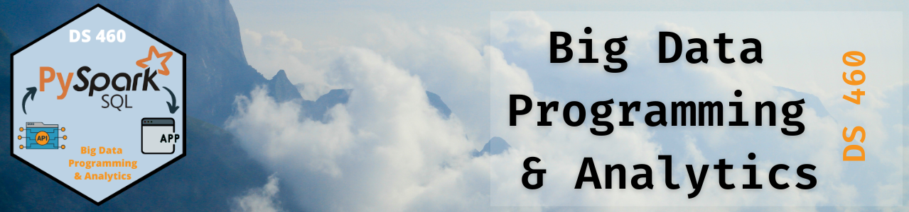

DS 460 Class Slides
Big Data Programming & Analytics

Class days
One deck per class meeting, in order.
| Deck | Topics |
|---|---|
| Welcome to DS 460 | Day 1: How this class works |
| Data Sizes, Formats, and Tools | Day 2: Parquet, Arrow, Polars, PySpark, and your first two challenges |
| Databricks Setup and Team Time | Day 3: Schedule, questions, Databricks Free Edition, and your proposal |
| Data Summaries That Persuade | Day 4: Charts, tables, due dates, and proposal time |
| Proposals and What’s Next | Day 5: Show your work, team time, presentations, and three new challenges |
| Written Challenge and Round Two | Day 6: Polars on paper, second pitches, and two new challenges |
| Work Time and Secrets | Day 7: Open class time on the two challenges, plus environment variables |
| No Class Today | Day 8: Adam Miller presentation |
| From Challenges to the Project | Day 9: Census API, the team project, analysis decks, and Murphy |
| Project Work Time | Day 10: Teams build, I come to you |
| Murphy in Class | Day 11: Our client in the room |
| Unit of Analysis Presentations | Day 12: Present, then two new challenges |
| Plan the Semester, Then Aggregate | Day 13: Questions, teaching topics, the schedule, and GROUP BY vs. windows |
| Written Challenge and Review | Day 14: On paper, then what the take-home taught us |
| Simple Features, Then Baskets | Day 15: Team presentations and association rule mining |
| What to Show on the Pump Screen | Day 16: Picking a modeling method for customer-specific offers |
No matching items
Topics
Reusable decks on one tool or idea. Pull them into a class day when the class needs them.
| Deck | What it covers |
|---|---|
| Baskets of Goods | Association rule mining on C-Store transactions |
| Build a Short Training | How to teach the class something in 15 to 120 minutes |
| Customer Segmentation | Clustering, dimension reduction, UMAP and HDBSCAN |
| Keep Your Secrets Out of Your Code | Environment variables in Python, Databricks, and R |
| Labeled Baskets | Turning C-Store transactions into a supervised model |
No matching items
Press s in a deck for speaker view, f for full screen, and Esc for a slide overview.